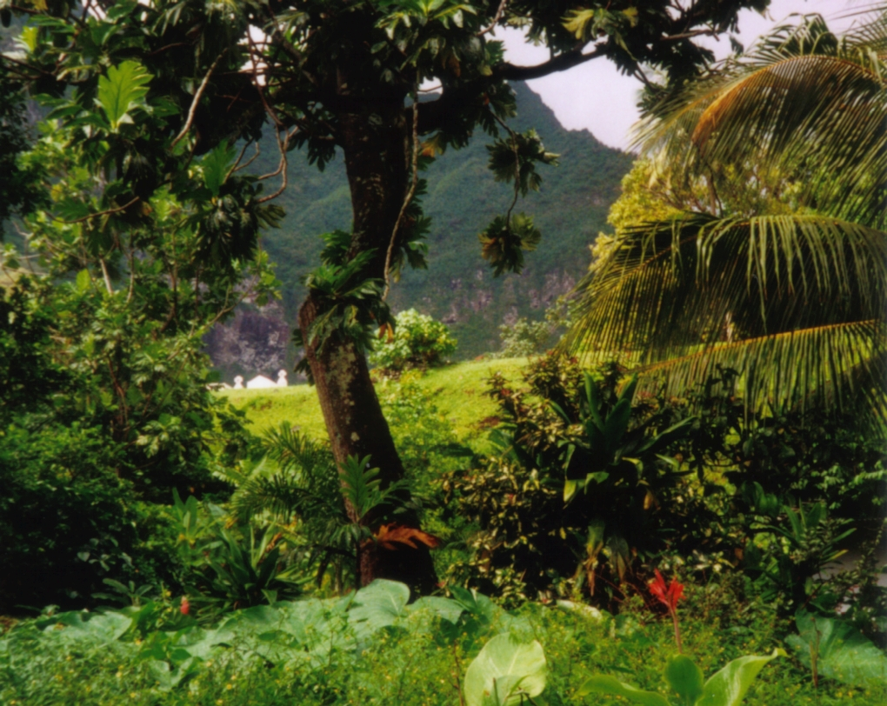

The rainforest in Fatu-Hiva

The rainforest in Fatu-Hiva, in the Marquesas Islands, is an example
of an undisturbed natural resource. Forest provides timber for humans, food and shelter for the flora and fauna. The nutrient cycle
between organisms form food chains and biodiversity of species.